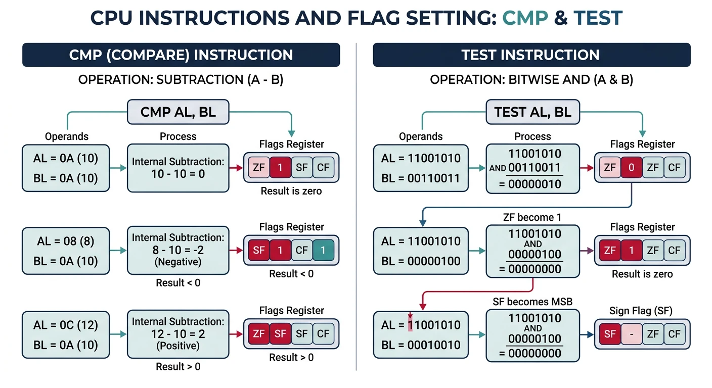
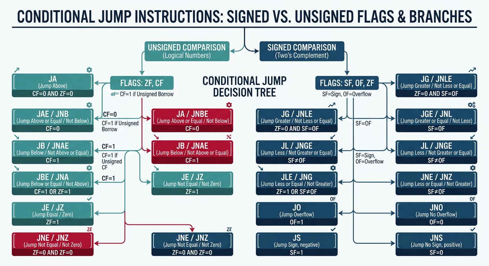
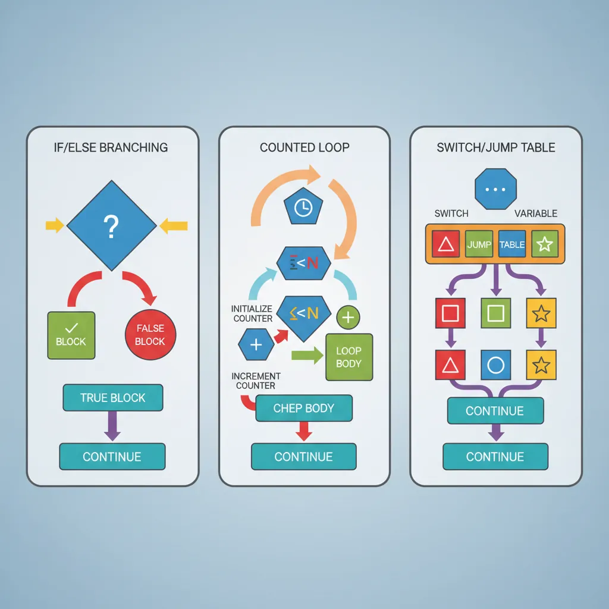
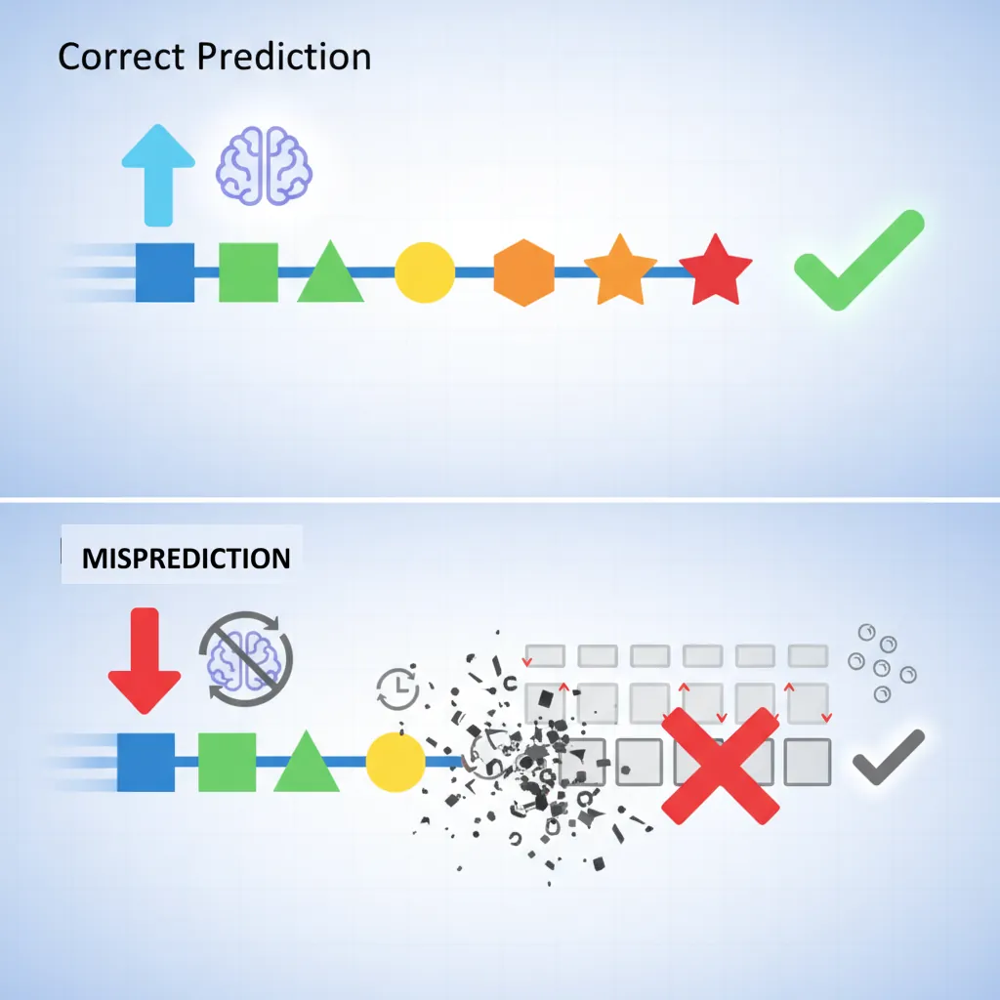
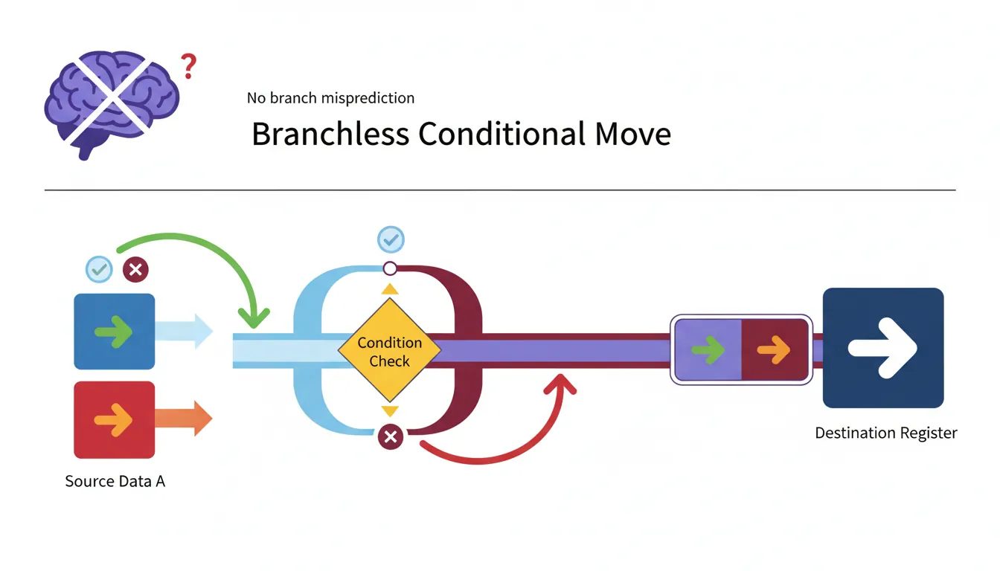

Unconditional Jumps
jmp label ; Jump to label (relative)
jmp rax ; Jump to address in RAX (indirect)
jmp [table + rax*8] ; Jump table accessMaster x86 control flow including unconditional jumps, conditional branches based on flags, CMP/TEST instructions, loop constructs, and understanding branch prediction for performance.
jmp label ; Jump to label (relative)
jmp rax ; Jump to address in RAX (indirect)
jmp [table + rax*8] ; Jump table access
cmp rax, rbx ; Set flags based on RAX - RBX
cmp rax, 10 ; Compare RAX to immediate
test rax, rax ; Is RAX zero? (sets ZF if RAX==0)
test rax, 1 ; Is bit 0 set? (check odd/even)
| Instruction | Condition | Flags |
|---|---|---|
| JG / JNLE | Greater than | ZF=0 AND SF=OF |
| JGE / JNL | Greater or equal | SF=OF |
| JL / JNGE | Less than | SF≠OF |
| JLE / JNG | Less or equal | ZF=1 OR SF≠OF |
| Instruction | Condition | Flags |
|---|---|---|
| JA / JNBE | Above | CF=0 AND ZF=0 |
| JAE / JNB / JNC | Above or equal | CF=0 |
| JB / JNAE / JC | Below | CF=1 |
| JBE / JNA | Below or equal | CF=1 OR ZF=1 |
These jumps test individual CPU flags directly:
| Instruction | Meaning | Flag Test | Common Use |
|---|---|---|---|
| JZ / JE | Jump if Zero/Equal | ZF=1 | After CMP, TEST |
| JNZ / JNE | Jump if Not Zero | ZF=0 | Loop until zero |
| JS | Jump if Sign (negative) | SF=1 | Check negative result |
| JNS | Jump if Not Sign | SF=0 | Check positive result |
| JO | Jump if Overflow | OF=1 | Signed overflow check |
| JNO | Jump if No Overflow | OF=0 | Safe arithmetic path |
| JP / JPE | Jump if Parity Even | PF=1 | Rarely used (FP compares) |
| JNP / JPO | Jump if Parity Odd | PF=0 | Rarely used |
| JC | Jump if Carry | CF=1 | Unsigned overflow |
| JNC | Jump if No Carry | CF=0 | No borrow in subtraction |
; Check for negative result
sub rax, rbx
js .handle_negative ; Jump if result is negative (SF=1)
; ... positive path ...
.handle_negative:
neg rax ; Make it positive
; Check for overflow in addition
add eax, ebx
jo .overflow_error ; Signed overflow occurred!
; ... continue normally ...
.overflow_error:
; Handle overflow...
; C: if (rax == 10) { rbx = 1; } else { rbx = 0; }
cmp rax, 10
jne .else
mov rbx, 1
jmp .endif
.else:
mov rbx, 0
.endif:For switch statements with dense, sequential cases, jump tables are much faster than chained if-else:
section .data
; Jump table: array of code addresses
jump_table:
dq .case_0
dq .case_1
dq .case_2
dq .case_3
section .text
; RDI contains switch value (0-3)
my_switch:
; Bounds check first!
cmp rdi, 3
ja .default ; If > 3, go to default
; Load address from jump table and jump
lea rax, [rel jump_table]
jmp [rax + rdi*8] ; Jump to case handler
.case_0:
mov rax, 100
jmp .end_switch
.case_1:
mov rax, 200
jmp .end_switch
.case_2:
mov rax, 300
jmp .end_switch
.case_3:
mov rax, 400
jmp .end_switch
.default:
mov rax, -1
.end_switch:
ret-S flag to see the assembly output!
; C: for (int i = 0; i < 10; i++) { sum += array[i]; }
xor ecx, ecx ; i = 0
xor eax, eax ; sum = 0
.loop:
cmp ecx, 10
jge .done ; if i >= 10, exit
add eax, [array + rcx*4]
inc ecx
jmp .loop
.done:The LOOP family decrements RCX/ECX and jumps if non-zero:
| Instruction | Action | Equivalent To |
|---|---|---|
| LOOP label | Decrement RCX, jump if RCX ≠ 0 | dec rcx; jnz label |
| LOOPE / LOOPZ | Loop while equal (ZF=1) AND RCX ≠ 0 | Find first non-match |
| LOOPNE / LOOPNZ | Loop while not equal (ZF=0) AND RCX ≠ 0 | Find first match |
; Sum array using LOOP (simple but slow!)
lea rsi, [array]
mov rcx, 10 ; Loop count
xor eax, eax ; sum = 0
.sum_loop:
add eax, [rsi]
add rsi, 4
loop .sum_loop ; Decrement RCX, jump if != 0
; LOOPE example: Count leading zeros in array
lea rsi, [array]
mov rcx, 10
xor eax, eax
.count_zeros:
cmp dword [rsi], 0 ; Sets ZF if element is 0
jne .done_counting
inc eax ; Count this zero
add rsi, 4
loope .count_zeros ; Continue while ZF=1 and RCX>0
.done_counting:dec rcx; jnz on modern CPUs! They exist for legacy compatibility. Use explicit counter decrements in performance-critical code.
Modern CPUs predict branch outcomes to keep the pipeline full. A misprediction flushes the pipeline—costing 15-20 cycles!

Branch Prediction Pipeline Impact:
Correct Prediction (typical):
Fetch → Decode → Execute → Retire
T1 T2 T3 T4 (seamless flow)
Misprediction (costly!):
Fetch → Decode → Execute → WRONG! → Flush → Refetch
T1 T2 T3 T4 T5-T20 (15-20 cycles lost)if (array[i] > 50) is hard to predict; Unpredictable branch (random data)
cmp byte [rsi], 128
jg .greater ; 50% taken - hard to predict!
inc r8 ; Count <= 128
jmp .next
.greater:
inc r9 ; Count > 128
.next:
; Hint: Use sorted data!
; If array is sorted, branch becomes 100% predictable:
; All values < 128 first, then all > 128perf stat -e branch-misses ./program to measure branch mispredictions. High numbers indicate optimization opportunities!
CMOV moves data only if the condition is true—no branching, no misprediction penalty!

; Traditional branch (can mispredict)
cmp rax, rbx
jle .else
mov rcx, rax ; if (rax > rbx) rcx = rax
jmp .endif
.else:
mov rcx, rbx ; else rcx = rbx
.endif:
; Branchless with CMOV (no misprediction possible!)
cmp rax, rbx
mov rcx, rbx ; Assume rcx = rbx
cmovg rcx, rax ; If rax > rbx, override with rax| Signed | Unsigned | Condition |
|---|---|---|
| CMOVG, CMOVNLE | CMOVA, CMOVNBE | Greater / Above |
| CMOVGE, CMOVNL | CMOVAE, CMOVNB | ≥ / Above-Equal |
| CMOVL, CMOVNGE | CMOVB, CMOVNAE | Less / Below |
| CMOVLE, CMOVNG | CMOVBE, CMOVNA | ≤ / Below-Equal |
| CMOVE, CMOVZ | Equal / Zero | |
| CMOVNE, CMOVNZ | Not Equal | |
; CMOV is best when:
; 1. Branch is unpredictable (random data)
; 2. Both paths are simple (just a move)
; Branch is best when:
; 1. Branch is predictable (loops, sorted data)
; 2. One path has expensive computation
; Example: Compute absolute value
; CMOV version (always good):
mov rbx, rax
neg rax ; rax = -rax
test rbx, rbx
cmovs rax, rbx ; If original was negative, use negated
; Alternative using AND (also branchless):
mov rbx, rax
sar rbx, 63 ; All 1s if negative, all 0s if positive
xor rax, rbx ; Flip bits if negative
sub rax, rbx ; Add 1 if negative (two's complement magic)Write branchless functions for min(a, b) and max(a, b):
; min(rdi, rsi) -> rax
min_func:
cmp rdi, rsi
mov rax, rsi ; Assume rsi is smaller
cmovl rax, rdi ; If rdi < rsi, use rdi
ret
; max(rdi, rsi) -> rax
max_func:
cmp rdi, rsi
mov rax, rdi ; Assume rdi is larger
cmovl rax, rsi ; If rdi < rsi, use rsi instead
ret